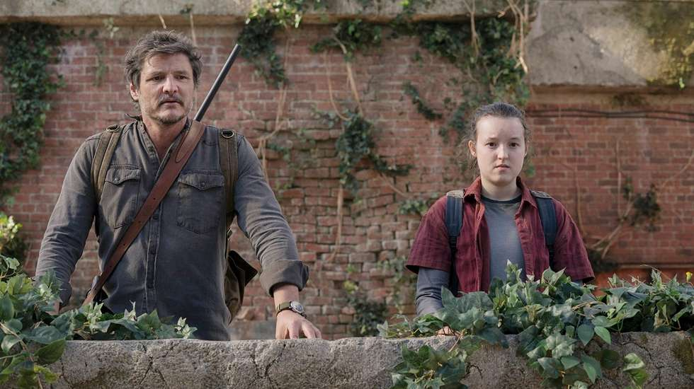

Sobre Joel Miller
Joel Miller es el protagonista principal de The Last of Us. Un hombre endurecido por la supervivencia en un mundo post-apocalíptico, Joel se convierte en mucho más que un sobreviviente cuando conoce a Ellie. Su viaje de redención y protección define toda la narrativa del juego, mostrando cómo la conexión humana puede transformar incluso al alma más oscura.
Características Principales
- Líder Natural: Posee las habilidades de liderazgo y la experiencia necesaria para navegar los peligros del mundo infectado.
- Combatidor Experto: Domina múltiples armas y técnicas de combate, aprendidas a lo largo de años de supervivencia.
- Inteligencia Táctica: Siempre está pensando estratégicamente y planificando la mejor ruta de escape o defensa.
- Protector Leal: Una vez que se compromete a cuidar a alguien, daría su vida por ello.

Historia de Joel
Joel comenzó la pandemia como un padre amoroso, pero la pérdida de su hija Sarah en el día del brote cambió su vida para siempre. Durante veinte años, Joel sobrevivió en la zona de cuarentena de Austin, convirtiéndose en un contrabandista y un hombre marcado por el trauma. Fue solo hasta que conoció a Ellie que redescubrió su propósito como protector.
Relación con Ellie
La relación entre Joel y Ellie es el corazón emocional de The Last of Us. Lo que comienza como una transacción comercial se transforma en un vínculo profundo de padre e hija. A través de su viaje juntos, Joel encuentra redención y propósito, mientras que Ellie descubre que la humanidad aún existe en este mundo oscuro. Su conexión es lo que impulsa toda la narrativa y los define como personajes.
← Volver a The Last of Us